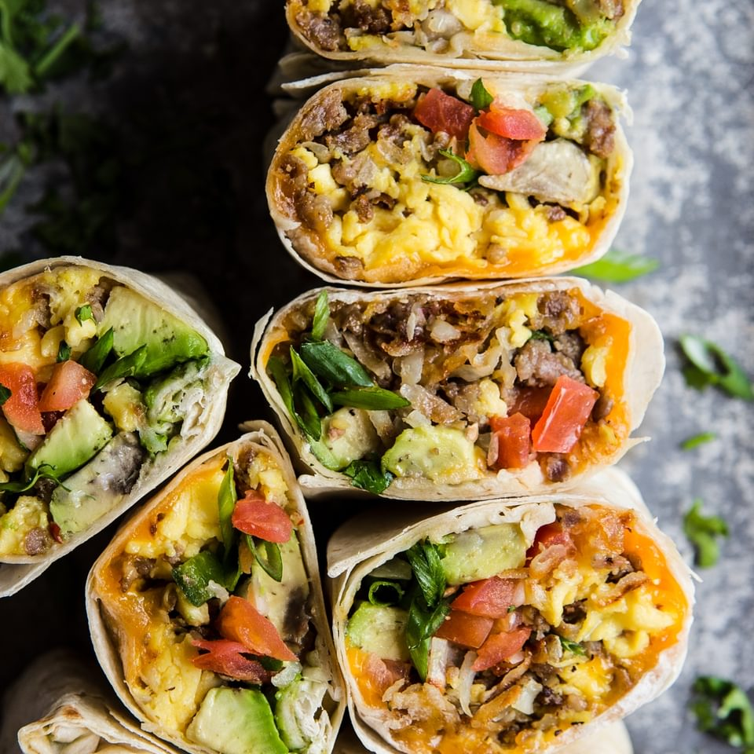

Breakfast Burrito

Recipe Description
Making breakfast can be difficult. Making a healthful, hardy,
nutrient-dense breakfast can be even more so. This breakfast burrito
recipe makes it all a bit easier. The ingredient list is almost fully
customizable and the technique described in the recipe is more efficient
than most. Between its ease and flexibility, this breakfast option will
leave you wanting one every morning...and afternoon...and evening...
Ingredient List
- 1 tortilla
- 2 large eggs
- 1 cup fresh spinach, chopped
- 1 cup shredded cheese
- 1/2 cup chopped protein of choice (sausage, bacon bits, etc.)
- salt and pepper to taste
Recipe Steps
- combine chopped spinach, eggs, and choice of chopped
protein in a bowl with salt and pepper
- heat greased pan on stove over medium heat
- let egg mixture cook untouched for about 30 seconds, then
lift edges carefully while rotating pan to allow wet egg on
top to fall to the bottom of the pan to cook evenly
- when only a bit of wet egg is left, sprinkle 1/2 cup of cheese on top
and place tortilla on top to cover for about 30 seconds, sealing the edges
with the little bit of cheese and egg mixture left
- flip tortilla and egg so that the tortilla side is down
and set to low heat
- sprinkle the rest of the cheese on top and let settle for 30
more seconds
- fold sides of flat burrito in toward the middle and flip face down to seal
- serve with your favorite sauces, salsa, guacamole, and more